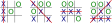
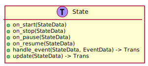
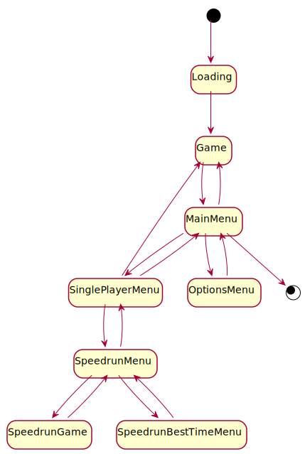
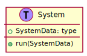
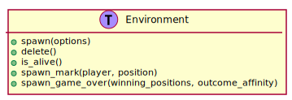
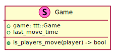
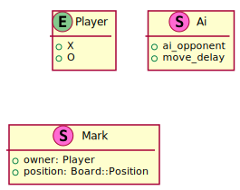

FossXO Game Design Document¶
1. Introduction¶
1.1. Purpose of this Document¶
This is the FossXO game design document. This document describes in detail the objectives, requirements, and design considerations of the game providing a central location for this information. This is invaluable for understanding the game’s scope, planning the project milestones, and creating the games assets.
Anyone who is involved with the game’s development is encouraged to read this document and keep a copy handy.
1.2. Scope of the Game¶
Tic-tac-toe is a game of strategy where two players, X and O, take turns placing their mark in a 3 x 3 gird. The first player to get three marks in a row, column, or diagonal wins the game.
FossXO is a unique take on the classic game of tic-tac-toe. Players of all ages battle the computer or each other in a variety of stunning environments. Each environment tells part of the story of tic-tac-toe from the past, present, and future. Each environment has a strong visual theme and complementary soundtrack.
FossXO is free, open source, and no contains no annoying advertisements. It runs on Windows, Mac, and Linux. The game launches Summer 2020.
1.3. Overview of this Document¶
This game design document contains chapters covering various aspects of the game. 1 This includes chapters for the Gameplay, User Interface, and various Environments.
The Technical Design chapter describe how the game is created. This includes details of the game’s software architecture and design.
Additionally, the Glossary defines terms that are used throughout the game design document.
1.4. Project Objectives¶
This section describes the project’s primary objectives.
1.4.1. Create Tic-tac-toe Game with Rust¶
The main deliverable of this project is a tic-tac-toe game for Windows, Mac,
and Linux. This project is the follow-up to the Ounce of Rust project 2
that resulted in the creation of a Rust based tic-tac-toe logic library,
open_ttt_lib. 3
In addition to creating a fun game, the project provides more hands on experience
using Rust and is a showcase for open_ttt_lib.
1.4.2. Provide Free of Charge and Under an Open Source License¶
FossXO is and will always be free, open source, and contain no advertisements or trackers. The game is released under a permissive open source license and its code is available from a public repository such as https://github.com/.
Many of today’s games casual games are released for free, but include questionable monetization models such as microtransactions, pay-to-win schemes, advertisements, and personal data harvesters. FossXO stands apart from these games by respecting players who choose to spend their valuable time playing the game.
1.4.3. Release by RustConf 2020¶
FossXO’s initial release is scheduled to coincide with RustConf 2020 on August 21, 2020. 4 RustConf is the annual Rust developers conference; since FossXO is developed in Rust this makes an excellent time to launch a Rust based game. 5
1.4.4. Easily Expandable and Modifiable¶
Playing tic-tac-toe in a variety of environments is a large part of what sets FossXO apart from other tic-tac-toe games. The game is designed such that developers can easily add new environments. This allows developers to focus their time and effort creating stunning environments. Additionally, this lowers the barrier of entry for users who are interested in modifying the game. Finally, an easily modifiable code base allows quick turnaround of future releases of the game.
1.4.5. Build Risk Reduction Prototype¶
The development team creating FossXO is new to the Rust programming language and the available Rust libraries for game development. To help mitigate this risk, a throwaway prototype game is created early in the project that explores various technical aspects.
Using the lessons learned from the prototype also helps the development team design a code base that is easily expandable and modifiable per the above objective.
Footnotes
- 1
The structure of this document is based on [Rogers-2014].
- 2
For details on the Ounce of Rust project see the Ounce of Rust Project Manual
- 3
open_ttt_libis available at https://crates.io/crates/open_ttt_lib and source code is hosted at https://github.com/j-richey/open_ttt_lib- 4
For details on RustConf see their website: https://rustconf.com/
- 5
To help meet the target release date, the initial release of the game might contain a subset of the environments described in this document.
2. Gameplay¶
2.1. Rules of Tic-tac-toe¶
Tic-tac-toe is a game of strategy where two players, X and O, take turns placing their mark in a 3 x 3 gird. The rules for tic-tac-toe used for each game mode are as follows:
Play occurs on a board composed of a 3 x 3 grid of squares. The board starts empty with no marks.
The first player places their mark in one of the grid’s squares. Traditionally, the mark is the letter X.
The second player places their mark in one of the grid’s empty squares. A square that already contains a mark cannot be updated or altered. Traditionally, the second player uses the letter O as their mark.
Turns alternate between the players until the game is over.
The first player to get three of their marks in a line wins the game. That is: they have three marks in a row, column, or diagonally. Examples of winning games are shown in Figure 2.1.
Figure 2.1 Examples of winning tic-tac-toe games showing player X winning by getting three marks a row, diagonal, and column. The red line shows the squares that contributed to the win. Notice that it is possible to get multiple sets of three marks in a row.¶
The game ends in a draw, known as a cat’s game, if no more empty squares remain and a player has failed to get three marks in a line. Examples of cat’s games are shown in Figure 2.2.

Figure 2.2 Examples of tic-tac-toe games ending in a cat’s game. No player managed to get three marks in a line.¶
The steps above are repeated for a series of games. The starting player alternates between games. For example, the second game player O gets to make the first move.
2.2. Single-player Mode¶
In single-player mode the player battles a computer controlled opponent. There are three difficulty settings: easy, medium, and hard.
Easy difficulty is targeted at players who are new to tic-tac-toe and/or computer games. The computer picks random squares allowing players to learn the game’s controls and rules.
Medium difficulty is for players who have some experience with tic-tac-toe. The computer provides a challenge to the player but games are still winnable.
At hard difficulty the computer plays almost perfect games. The player must capitalize on rare mistakes made by the computer to win. This is the recommended difficulty for experienced tic-tac-toe players.
2.3. Two Player Mode¶
In two player mode two players take turns placing their marks according to the rules of tic-tac-toe previously described.
2.4. Speedrun Mode¶
A speedrun mode provides an additional challenge for experienced players. Players battle a flawless computer opponent through ten environments completing the games as fast as possible. At the end of the run the total time is displayed along with the previous best times. 1
The player is disqualified and the run halted if the player loses a game. Since the computer opponent never makes a mistake, each game in the speedrun ends in a cat’s game. In other words, each speedrun requires the same total number of moves to complete.
Unnecessary animations are disabled in speedrun mode so they do not get in the way of the speedup gameplay. Additionally, speedrun mode has its own dramatic music that replaces the music tracks of each environment — environments are played so fast there is not sufficient time to appreciate their individual sound tracks.
Footnotes
- 1
The time it takes the computer to pick a square is not counted towards the player’s time. This ensures times are consistent between slower and faster computers.
3. User Interface¶
This chapter describes the user interface of FossXO. This includes the main game board, controls, and all game menus.
3.1. Game Board¶
The game board is where players spend the majority of their time. Additionally, the game loads directly to this view ensuring players get to gameplay as quickly as possible without menus getting in the way. 1 A concept drawing of the game board is shown in Figure 3.1.
Figure 3.1 Game board concept drawing.¶
The game board contains the following items of interest:
The marks and grid. The appearance of these depend on the current environment being played. However, the marks for all environments use the same center point and have the same selectable hot spot. This ensures consistency between environments when using the mouse.
The background of the game board depends on the current environment.
The hamburger button opens the Main Menu.
Status text indicates who gets to make the next move and the outcome of the game. Once the game is over buttons to play the next game or return to the menu also appear in this area. The text is outlined or shaded such that it is visible over any possible background.
A major focus of the game is playing tic-tac-toe in variety of stunning environments that control how the marks, grid, and background look. Thus, a minimalist approach is used for the game board view. The only UI widgets are a menu button and some status text.
3.1.1. Speedrun¶
Additional UI widgets are added to the game board to facilitate speedrun mode. Figure 3.2 shows the speedrun game board.
Figure 3.2 Speedrun game board concept drawing.¶
Items of interest are:
The speedrun status display prominently shows the elapsed time of the run. This helps give the player a sense of urgency and lets them see if they are on track to get a best time.
Splits for each game are additionally displayed. Dashes or other marks are used for games that have yet to be played. This allows players to quickly visually gauge how many games remain.
Opening the game’s menu ends the run. The run is disqualified.
Status text indicates the current turn. If the player loses a game, the status text notes that the run is disqualified and the player is invited to try the run again or return to the Speedrun menu. 2
When a game is competed successfully the next game starts immediately allowing players to go as fast as possible through the games.
3.2. Controls¶
The game can be fully played with either a mouse or keyboard. New or casual players may prefer to use a mouse whereas speedrun players may prefer to use the keyboard.
3.2.1. Mouse¶
Mouse left click is used to select free squares and press menu buttons. Right click and other mouse buttons are unused.
3.2.2. Key Bindings¶
The game supports being played using the keyboard. 3 Figure 3.3 shows the game’s keybindings for selecting squares.
Figure 3.3 Keybindings for selecting squares.¶
The numpad keys are available for right handed players and the QWE set of keys are available for left handed players.
The arrow, ESC, Enter, and Space keys allow users to navigate the game’s menus.
3.4. Screen Flowchart¶
The flow chart in Figure 3.10 visually shows how the screens and menus are connected.
![hide empty description
' Create aliases for state names with spaces
state "Tic-tac-toe Board" as game_board
state "Main Menu" as main_menu
state "Single-player" as singleplayer
state "Speedrun" as speedrun
state "Speedrun Board" as speedrun_game_board
state "New Best Time!" as speedrun_best_time
Loading --> game_board
game_board --> main_menu : Menu / ESC
main_menu --> game_board : Multiplayer
main_menu --> singleplayer : Single-player
main_menu --> Help : Help
singleplayer --> game_board : Easy \n Medium \n Hard
singleplayer --> speedrun : Speedrun
singleplayer --> main_menu : Back
speedrun --> singleplayer : Back
speedrun --> speedrun_game_board : Start
speedrun_game_board --> speedrun : Non Best Time
speedrun_game_board --> speedrun_best_time
speedrun_best_time --> speedrun : Close](_images/plantuml-5ebdeb1c6127f2a05c456ce28a226564b735b7bf.svg)
Figure 3.10 Connections between FossXO’s menus and screens.¶
Footnotes
- 1
The loaded game is a single-player game using the last difficulty and player mark settings. The defaults for these are Medium difficulty and X marks.
- 2
If the player loses a speedrun game, the board remains visible so the player can see where they made mistakes. This allows them to adjust their strategy for next time.
- 3
Keyboard support helps improve the game’s accessibility by allowing custom controllers to emulate to the game’s key mapping.
- 4
Many games a have a resume game button to go back to an progress game. However, tic-tac-toe games are very short and require little pre-game configuration. Therefore, having resume game functionality adds unnecessary complexity for this game.
- 5
The loading screen is needed if the load time exceeds one second on the minimum supported system listed in Table 5.1.
- 6
The Provide Free of Charge and Under an Open Source License objective mentions not tracking players. Websites often contain trackers, advertisements, and other items that violate this objective.
4. Environments¶
One of the main defining features of FossXO over other tic-tac-toe games is the use of multiple environments. Each environment has a strong visual theme and complementary soundtrack. 1
4.1. Environment Selection¶
Each game takes place on a different environment. Environments are selected using a shuffling algorithm. 2 This ensures players get to experience each environment in a random order.
4.2. List of Environments¶
4.2.1. Blueprint¶
{kind=link}
Figure 4.1 Concept art for the Blueprint environment.¶
Marks and Grid
The blueprint uses white text for the marks and white lines for the grid.
The grid is a series of empty boxes. The interior lines are more prominent than the exterior lines.
Hovering over an empty square shows a dotted version of the mark that would be drawn. Clicking places the mark without further animation.
Winning the game causes a “Winning Marks” label to be placed with arrows pointing to the corresponding marks.
Background Scenery
The background is predominantly deep blue. Additional, details are included in white.
There is a title block with the game’s name, author, version number, etc.
Measurement lines indicate the unit less distance between features.
The grid, squares, marks, etc are pointed to by arrows with labels. Additional notes describe the music being played or point out the key bindings.
Music Theme
Background or thinking music.
Additional Details
This environment provides an opportunity to point out features of the game that might be overlooked by players such as keyboard support.
4.2.2. Notebook Paper and Pencil¶
{kind=link}
Marks and Grid
The marks and grid are dark graphite from a #2 pencil. Each mark is slightly different and the grid lines are not perfectly straight to give it a hand drawn look. Likewise, mark placement is animated like one writing an X or O while a corresponding pencil sound FX is played.
A line is drawn through the winning marks.
Background Scenery
The background consists of notebook or engineering paper. Notebook paper is white with gray or blue lines. Often times there also a vertical red margin line. Engineering paper is yellow with gray grid lines.
There are doodles, text, or other drawings to give the environment character. The engineering paper is more likely to have nerdy drawings.
Music Theme
Mild background music.
4.2.3. Pen on Scrap Paper¶
Marks and Grid
The marks and grid are created from blue or red ink. Like the Notebook Paper and Pencil environment, each mark is hand drawn with corresponding animations and sound FX.
A line is drawn through the winning marks.
Background Scenery
Various bits of scrap paper are used for the background. This can include but is not limited to bank deposit slip, various store receipts, or any other paper someone might have in their purse.
Text on the paper should be gray, faded black, or otherwise not interfere with the visibility of the marks.
Music Theme
Something with a gospel / church vibe
Additional Details
The mark / grid color and the background image is randomly selected each time the environment is played. Blue and red ink is used so the marks stand out from the background.
The inspiration from this environment comes from me not paying attention in church and drawing on scrap paper my mom happened to have.
4.2.4. Neon Lights¶
{kind=link}
Marks and Grid
The marks and grid are created from luminescent orange, pink and / or blue neon lights. Selecting a square causes the mark to illuminate with a flickering animation and an electric buzzing sound FX.
All winning marks flash on and off with a mild electric buzz sound FX.
When the environment first loads in non-speedrun mode the lights are not illuminated. Then the grid flickers on as if the transformer is starting to fail.
Background Scenery
The background is a brick wall holding the neon lights. The wall is illuminated by the lights. E.g. when a mark is selected the brick wall behind the mark gains some illumination as shown in the concept art.
Music Theme
80’s electronic
Additional Details
This environment provides an opportunity to show off the game’s graphics including lighting FX.
4.2.5. Early Computer¶

Figure 4.4 Concept art for the Early Computer environment.¶
Marks and Grid
The marks and grid are green or amber ASCII characters displayed on a low resolution monochrome computer screen. E.g. individual pixels are distinguishable. The marks in winning squares blink on and off.
A blinking cursor is shown when players mouse hover over a empty squares. The cursor is the full width and height of a character, e.g like the modern insert cursor. A cliché beeping sound FX is played when squares are placed.
When the environment loads in non-speedrun mode each line of ASCII text is drawn as if the game was being loaded over a 300 baud modem.
Background Scenery
The background is a monochrome computer monitor with the an off white bezel and red LED near the power button. The background color is dark green or dark amber with perhaps the dark pixels still visible.
Music Theme
8-bit electronic
Additional Details
Additional FX include animated scan lines due to a poor connection between the monitor and computer.
4.2.6. Sidewalk¶
{kind=link}
Marks and Grid
The marks and grid are created from pastel sidewalk chalk. The lines are thick and hand drawn with similar animations as the Notebook Paper and Pencil environment.
Pastel colors include red, blue, yellow, pink, green, and orange. The X, O, and grid use different colors that are randomly selected each game.
A line is drawn through the winning squares.
Background Scenery
The background is a gray sidewalk or black asphalt. Imperfections such as cracks and twigs are visible. There might even be bits of other chalk drawings visible.
Music Theme
Hip Hob / R&B
4.2.7. Papyrus Paper and Fancy Calligraphy¶
Marks and Grid
The marks and grid are drawn from a quill pen with deliberate, fancy strokes. Thick black ink is used. The grind lines and marks are precise but the stroke pressure varies as the mark is being made, thus the lines are thinner near the starting and ending points.
Creating of the marks and grid are animated. A line is drawn through the winning squares.
Background Scenery
The marks and grid are drawn on a faded tan papyrus paper. The paper’s rough texture is clearly visible.
The tic-tac-toe game could be part of a scroll or book. E.g. there is Latin text and one of those fancy first characters of the paragraph.
Music Theme
Snooty classical music.
4.2.8. Bathroom Stall¶
Marks and Grid
The marks and grid are scratched into the bathroom stall divider. This reveals the metal underneath the paint. Each scratch is a fairly straight line but it takes several attempts to form a line thus there are “whiskers” hanging off the lines. The O marks are especially problematic resulting in malformed O’s.
A metal scraping sound FX is played when the marks are being created.
A line is scratched through the winning marks.
Background Scenery
The background is a pail blue, green, or gray stall divider. There is additional graffiti written in ink or scratched into the paint that one would find in a truck stop bathroom. Nothing inappropriate but adults should find it funny.
Music Theme
Truck stop music; perhaps a country vibe.
Additional Details
There is bathroom humor a Easter egg in this environment. A “straining” sound FX is played after a minute or two; past the length of a typical game. Think of that one scene from Austin Powers. The situation becomes more desperate as time goes on. Finally it resolves itself with a large plop / splash sound and a big sigh of relief.
4.2.9. Chalkboard¶
{kind=link}
Marks and Grid
The marks and grid are created from hand drawn white chalk. A stereotypical chalk sound FX is used when the marks are being drawn.
A line is drawn through winning marks.
Background Scenery
A black or dark green chalkboard is used as the background. The chalkboard is well used; there is a lot of chalk dust marks left from the eraser.
To reinforce the chalkboard theme, the tray containing the eraser and extra chalk is visible.
Music Theme
To be determined later by the environment artist.
4.2.10. Whiteboard¶
Marks and Grid
The marks and grid are created from various colors of dry erase markers. Typical colors include, blue, green, black, red, and purple. The grid and each mark are hand drawn in different colors.
A squeaking sound is made when marks are being drawn.
Winning marks are circled to both give a more professional look to the environment and differentiate it from the chalkboard environment.
Background Scenery
The background is a white dry erase board. The board does not erase well so faded physics equations is still visible in the background.
To reinforce the whiteboard theme, the tray containing the eraser and extra markers is visible.
Music Theme
To be determined later by the environment artist.
Additional Details
Easter egg opportunity: selecting one of the extra markers changes the mark color of the current player.
4.2.11. Ancient Alien Ruins¶
Marks and Grid
The marks and lines are glyphs carved into rock with glowing light coming from the glyphs.
At first there is a grid, X, and O carvings in the rock. Mouse hovering over a free square causes some mild blue illumination. Placing the mark results in brighter illumination and the surrounding grid to illuminate too.
When the game ends in a win, the wining marks illuminate very brightly and even change color. The grid takes on a uniform illumination. A cats game or single player loss results in the grid to go dark and all the marks to go back to a mild illumination, as if the power has been cut and they are slowly fading away.
A strange alien sound FX is used when marks are placed.
Background Scenery
The background is gray rock that would be found in a cave deep in the jungle. There are various glyphs carved into the rock. There might even be some moss, vines, or other deep green plants on the rock.
Music Theme
SciFi
4.2.12. Dirty Car Window¶
Marks and Grid
The marks and grid are drawn in the window’s dust reviling the shiny tinted glass underneath. The marks are fairly fat and despite being hand drawn are mostly straight.
A mild swooshing sound FX is used when marks are drawn. A line is used to indicate wining marks.
Background Scenery
The background is a dusty car window. The dust is a brown dirt color. Stickers such as the “my family” are trying to peak out from underneath the dust. The back windshield wiper reinforces the car theme.
Music Theme
Hip Hop with rattling door sounds.
4.2.13. 16x4 LCD Display¶
Marks and Grid
The marks and grid are black or white LCD pixels. Black is used with the green background and white is used with the blue background.
Mousing over a free location causes a cursor, the underscore character (_),
to blink in that location.
Asterisk characters are placed next to winning marks.
Background Scenery
The background is green or blue backlit 16x4 LCD display that is mounted on a green circuit board. There are other electrical components, wires, and even LEDs around.
Music Theme
8 bit
Additional Details
Some artistic liberty with regards to the 16x4 LCD display might need to occur to ensure the mark’s center points are in the correct locations.
4.2.14. Ancient Egypt Tomb¶
Marks and Grid
The marks and grid are carved into the limestone wall background. A chiseling sound FX is played when marks are being carved. The grid and marks are chiseled with skill, that is they are straight and precise.
A line is chiseled through the winning marks.
Background Scenery
A limestone wall covered in hieroglyphs is used as the background.
Music Theme
Something with an ancient vibe.
4.2.15. Beach¶
Marks and Grid
The marks and grid are hand drawn into sand at the beach. A light swooshing sound FX is played when marks are created.
A line is drawn through the winning marks.
Background Scenery
Wet stand is used as the background. There are seashells and other shore debris.
Music Theme
Tropical / Jamaican / steal drums.
4.2.16. RGB Led Grid¶
{kind=link}
Marks and Grid
The marks and grid are displayed on a 64x32 RGB LED grid. The marks and grid each use their own colors. This includes primary and secondary colors.
Placing a mark displays an cheesy animation such as stacking up block to form the mark. Winning squares flash between normal and inverted color where the background is illuminated instead of the foreground.
Background Scenery
The background is the unilluminated LEDs and the plastic material that separates the LEDs. The LEDs are a lighter color than the almost black spacer material. Occasionally there may be various animations or other FXs played on the LEDs outside the play area.
Music Theme
Modern 8 bit or techno.
4.2.17. Electroluminescence¶
{kind=link}
Marks and Grid
The marks and grid are composed of either cyan or orange colored electroluminescent wire. X is assigned one color, and O the other. Placing a mark causes the border of the grid to pick up the marks color.
All of the marks and grid take on the winner’s color after a brief flashing transition.
Background Scenery
Black with a faint blue or cyan grid pattern. Pulses of light could occasionally travel down the grids.
Music Theme
Techno
4.2.18. Crayon¶
Marks and Grid
The marks and grid are hand drawn with different colors of crayons.
A line is drawn through the winning marks.
Background Scenery
The game is played on drywall. A light switch or electrical outlet is visible to reinforce the location. There are other rudimentary drawings of flowers, houses, or trucks visible.
Music Theme
To be determined later by the environment artist.
4.2.19. Oil Painting¶
Marks and Grid
Thick oil based paint forms the marks and grid. The brush strokes are clearly visible. Strokes are deliberate resulting in fairly straight lines. Stereotypical paint stroke FXs are used where lines from individual bristles are visible as the stroke is letting up.
Various vibrant colors are used; the marks and grid each get their own color.
A line is drawn through the winning squares.
Background Scenery
The painting is being drawn on white canvas. The texture is clearly visible. Part of the wooden easel is also visible.
Music Theme
Phone hold music, e.g. light modern classical.
4.2.20. Bacteria¶
Marks and Grid
The grid is composed of rod bacteria viewed under a microscope. The X and O marks are likewise formed from bacteria of the corresponding shape.
The bacteria can appear purple in color due to Gram staining or as red.
The winning squares are marked by the bacteria inside the multiplying rapidly.
Background Scenery
The background is the fluid the bacteria is living in. There are imperfections in the fluid that seem to wander around, many out of focus.
Music Theme
To be determined later by the environment artist.
4.2.21. App¶
Marks and Grid
The marks and grid are made up of simple clean lines. The marks are solid red or blue. The grid is solid gray in color. Animations are not used or used lightly.
A line is drawn through the winning marks. The line is the same color as the marks.
Background Scenery
The game is being played on a smart phone that is rotated 90 degrees. The background of the play area is solid white.
Additionally. the phone’s bezel, speaker, and status bar are all visible. The status bar includes signal level, power level, and time on the right side. The left contains annoying advertisements that advertise fictional products, poke fun at data stealing apps, and promote the other environments in the game. The advertisements are rotated 90 degrees like the phone.
Music Theme
Casual
Additional Details
There is an Easter egg opportunity with the advertisements where clicking on one advertising a different level switches the environment to that level.
Footnotes
To play off of the game’s name, FossXO, environment artists are encouraged to hid a reference to a fox someplace in the environment.
- 2
Wikipedia’s Fisher–Yates shuffle article contains details on various shuffling algorithms.
5. Additional Considerations¶
This chapter contains additional information about FossXO.
5.1. Target Audience¶
FossXO is targeted at casual gamers. There are three general groups that might find the game interesting: new PC gamers, bored adults, and modders.
5.1.1. New PC Gamers¶
FossXO can be played by young or older players that do not have much PC gaming experience. The game requires basic strategy and has simple inputs. As players become more comfortable with the game mechanics they can try Speedrun Mode.
5.1.2. Players Filling Time¶
Office workers or people stuck on an airplane can play FossXO to make the time pass. The regular game modes do not demand much attention so players can let their minds wonder while playing. The variety of environments should keep players entertained for at least a little while.
5.1.3. Computer Science Students / Modders¶
FossXO is open source and is developed so that others can add their own environments or extend the game. FossXO is a simple, but non-trivial application where people learning to program might find it an interesting code base to examine.
5.2. Target Platforms¶
FossXO runs on a variety of popular desktop operating systems including Windows, macOS, and Linux. Being a casual game, it does not require a beefy video card or fast processor. Table 5.1 lists the minimum system requirements.
OS |
Windows 10, Linux 1, macOS |
Processor |
1GHz dual core |
RAM |
4GB |
Disk |
500 MB available space |
Graphics |
OpenGL compatible graphics adapter |
Display |
800 x 600 pixel display or larger |
Network |
The game is played fully offline |
A system with the above requirements listed in Table 5.1 can render the game at an average of at least 30 frames per second.
Footnotes
- 1
FossXO is tested on the latest releases of Debian and Fedora. It should work on other popular distributions including Ubuntu. However, testing on other distributions is outside the scope of this project.
5.3. Licensing and Distribution¶
This section describes how the game is licensed, distributed, and other related details of getting the game into player’s hands.
5.3.1. Game’s License¶
The game is dual licensed under the MIT 1 and Apache-2.0 2 licenses. This is the same licensing scheme used for the Rust language. 3 Under these licenses users are free to obtain, modify, and redistribute the source code for both private and commercial use.
Any original game assets are licensed under the CC-BY-4.0 license. 4
5.3.2. Distribution¶
The game is directly distributed to players via the internet. There are two main ways to acquire a copy of the game: downloading a platform specific package, or building the game from source.
5.3.2.1. Platform Packages¶
Platform specific packages can be downloaded from the game’s website. In particular, Windows users expect an installer to install the game on their system. They do not have ready access to compilers or other tools to build software from source. Finally, Windows is the most widely used operating system so a Windows installer is a requirement for this project to be successful.
Linux and Mac users have easier access to compilers but they still appreciate packages for their convenience. Packages for these platforms are created on a best effort basis.
5.3.3. Monetization¶
There is no intention to generate revenue from FossXO. The is released free of charge. There are no advertisements, microtransactions, or data stealing spyware that is found in other free games.
5.3.4. Third Party License Compliance¶
FossXO makes extensive use of third party software libraries and game assets to help reduce the development effort. To use these resources, the game must comply with their various licensing terms. Additionally, the game can only use any third party resources that have licenses that are compatible with the game’s license.
5.3.4.1. Software Libraries¶
Rust libraries that have the following licenses can be used by the game:
MIT
Apache-2.0
The Unlicense
Additionally, the game can dynamically link to libraries with the above licenses plus libraries that are licensed under the LGPL.
A software bill of materials is included in the game’s user documentation. This ensures the game complies with the required copyright notices. Also, users can see exactly what is included in the software.
The software bill of materials includes the following information about each library:
Name
Version number
License
Link to website or source code repository
5.3.4.2. Game Assets¶
The game can freely use or remix third party music, sound FX, and textures that have the following licenses: 6
CC0
CC-BY
CC-BY-NC 7
A list of third party assets used is accessible from the game’s credits or user documentation to fulfill the attribution requirements. The following information is included for each asset:
Title - title of the work.
Author - name or handle of the author.
License - the specific CC license the work is published under.
Copyright notice - some works include a copyright notice supplied by the author that must be included in the attribution.
Source - link to website the asset was obtained from.
Is derivative - Mention if the work was modified from the original and provide a short summary of changes.
5.3.5. Internationalization and Localization¶
The game is initially released in American English. However, localizations are accepted from contributors to include in future releases. This helps the game be more accessible to a wider audience. To make it easy to add various localizations, the game is designed with internationalization support.
Footnotes
- 1
- 2
- 3
See Rust’s README for licensing details.
- 4
Choose an open source license - Creative Commons Attribution 4.0 International
- 5
Cargo, the Rust package manager, can download and build applications hosted on crates.io. However, crates.io has a 10MB size limit that is too small to host this game.
- 6
The CC-BY-SA is incompatible with the the game’s licensing terms. It is this author’s understanding that a game is considered a derivative work and thus must also be licensed under CC-BY-SA if it were to use CC-BY-SA assets.
- 7
Per the monetization section, the game is being released for free and is not intended to produce a revenue stream.
5.4. Similar Games¶
Tic-tac-toe is a popular paper and pencil game that has been played since the times of ancient Egypt. Sandy Douglas’ 1952 take on tic-tac-toe, called OXO, was one of the first computer games. 1
However, the major inspiration for this variant of tic-tac-toe comes from James Richey’s 2004 Tic Tac Toe shown in Figure 5.1.
Figure 5.1 Screen shot of James Richey’s 2004 Tic Tac Toe.¶
James developed his version of while learning the C++ programming language. Tic-tac-toe provides a fun challenge for learning a new language: it requires both algorithmic and graphical components to implement a small but nontrivial application.
When thinking of a project to use to help learn the Rust programming language, creating a tic-tac-toe game is a fun choice.
Footnotes
- 1
See Wikipedia’s Tic-tac-toe article for additional information about the history of tic-tac-toe.
5.5. Future Enhancements¶
There are some additional features that can be considered for future versions of the game. These are described below.
5.5.1. Network Multiplayer¶
Network based multiplayer allows players to remotely battle each other. Network based multiplayer is preferable to local multiplayer in many situations such as friends who live in different states, office environments, or players trying to avoid a zombie apocalypse. 1
There are different network multiplayer modes.
- Normal
The normal mode is Two Player Mode but played over the network instead of locally.
- Speedrun
Speedrun multiplayer is a two player version of Speedrun Mode where the players compete to see who can play 10 games the fastest without loosing. If a player wins one of the games, the speedrun is over and that player is the winner. If all ten games are cat’s games, then the player with the fastest overall time wins.
- King of the Hill
King of the hill allows more than two people to battle. From the pool of available players two are chosen to battle. The round consists of playing two games. The player first to win any game, or in the case of all cat’s games has the fastest overall time, wins the round. They stay in the game and another challenger is selected from the pool of players. This continues until a victory condition is met, such as the first player to win X number of rounds.
Regardless of the mode, the players always see the same environment to ensure a consistent play experience.
5.5.2. Achievements¶
Achievements provide players goals outside the usual Gameplay rules. These provide more depth to the game and encourage players to try different approaches to the game.
A future enhancement is to add achievements to the game. Some achievement might include the following.
Win a game
Play a game in every environment
Win a hard game
Win a game on every environment
Win a hard game on every environment
Complete a speed run
Complete a speed run in less than X seconds
Complete a speed run in less than 1 second!!
5.5.3. Additional Environments¶
A major focus of FossXO is the ability to play tic-tac-toe in a variety of Environments. Future versions of the game can add even more environments. Some environments to consider are listed below.
Lasers. Perhaps a laser cutter or some other use of lasers.
Shower door or bathroom mirror.
Futuristic dystopian or cyber punk theme.
Some playgrounds have a 3x3 grid of squares for playing tic-tac-toe.
Winter / snow / frozen lake theme.
Food theme.
Light board, like those found in ships or submarines.
OXO oscilloscope throwback theme.
Metal or glass forge with lots of glowing hot liquids.
Clone of James’ 2004 Tic Tac Toe.
Footnotes
6. Technical Design¶
The technical design of FossXO is described in this chapter.
6.1. Engine Overview¶
FossXO is developed using the Rust programming language per the Create Tic-tac-toe Game with Rust objective. To help reduce the development effort, and avoid creating a game engine from the ground up, FossXO built on top of the Amethyst game engine and makes extensive use of other existing Rust libraries.
6.1.1. Amethyst¶
FossXO uses Amethyst v0.15.0 as the game’s engine. Amethyst is a data-driven game engine written in Rust. 1 Amethyst uses a entity component system (ECS) architecture where entity represents a single object in the game. Components store data about one aspect of the object. Systems contain logic that is executed on collections of components every loop. Amethyst also contains support for game states, resources, and events.
In addition to the ECS architecture, Amethyst provides a rendering engine that supports various backends including Vulkan, a basic UI framework, audio support, and IO utilities.
Note
FossXO makes extensive use of the features provided by Amethyst. It is highly recommended to read the Concepts behind Amethyst chapter of The Amethyst Engine book ([Amethyst-book]). This chapter introduces the fundamental concepts in Amethyst that this game is built around. 2
The Game States, Systems, and Components, Resources, and Entities sections describe the details of how the game is built on top of Amethyst.
6.1.2. open_ttt_lib¶
FossXO uses the open_ttt_lib library to manage the game rules and AI
algorithms per the Create Tic-tac-toe Game with Rust objective.
6.1.3. Modules¶
Rust applications and libraries use modules to organize the functionality. An overview of the game’s modules is shown in Figure 6.1.

Figure 6.1 FossXO’s major modules and their relationships.¶
A brief description of each module follows:
- <fossxo crate>
Contains the entry point of the application. This initializes the engine, loads any required data to start the game, starts the game’s systems, and finally sets the first game state to run.
- states
Contains the game’s states that are described in the Game States section.
- systems
Contains the game’s systems that are described in the Systems section. This also provides system bundles for convenient access to groups of systems.
- environments
Contains the game’s environments including the Environments Resource.
- resources
Contains the games public resources, with the exception of the Environments Resource.
- components
Contains the game’s components.
- events
All events sent by the game are contained in the
eventsmodule. This includes theEventDataenum in Figure 6.3.- file_io
Holds functionality related to loading and saving the games custom files.
Developers are encouraged to add additional modules if needed to help with the maintainability of the project. 3
Footnotes
- 1
See the Throwaway Prototype Lessons section for why Amethyst was chosen over other popular Rust game engines.
- 2
Readers might also find this unofficial Amethyst Architectural Guidelines (archive) useful, especially when designing game states, systems, components, and resources.
- 3
One such additional module could be the
utilsmodule for holding functionality that is required by a many of the other modules.
6.2. Game States¶
A game state is a general and global part of the game. The active state is updated every game loop, has access to the world’s entities and resources, and can receive events. States can also request a transition to a different state.
6.2.1. State Trait¶
In Amethyst states implement the State trait. A summary of the State trait is shown in Figure 6.2.

Figure 6.2 Notable methods provided by the State trait.¶
Each method is provided a StateData structure that provide’s access to the
world’s entities and resources. Additionally, handle_event() is provided an
EventData enum, shown in Figure 6.3, that aggregates the
different types of events available to the states.

Figure 6.3 Event data available to states.¶
The window, UI, and input events are generated by various Amethyst subsystems. The remaining variants hold custom events generated by the game that states wish wish to receive.
6.2.2. State Diagram¶
The state diagram in Figure 6.4 shows each state and their state transitions. 1

Figure 6.4 State diagram for the game states.¶
6.2.3. Game State¶
The game state is used for Single-player Mode and Two Player Mode games. The responsibilities of this state are:
Spawn the player and AI opponent entities for playing the game.
Handle player events for when marks are placed.
Manage the game resource.
Show the game environment with the Environments Resource.
Show the Game Board widgets including the menu button and status text.
Navigate to the main menu state.
When the game state is started, the options to use are provided. This includes if the game is single-player or multiplayer. For single-player, this is the difficulty level and if the player is using X or O marks.
6.2.4. Speedrun Game State¶
The speedrun game state is used for Speedrun Mode games. 2 The responsibilities of this state are:
Spawn the player and AI opponent entities for playing the game.
Handle player events for when marks are placed.
Manage the game resource.
Keep track of the total speedrun time and time for each game.
Show the Speedrun widgets including the menu button and status text.
Navigate to the best time menu state providing the results of the speedrun. The results include a successful game along with the run’s time, a lost game, or an aborted game from the player opening the menu.
6.2.5. Loading State¶
The loading state is the first state run when the game starts. The responsibilities are:
Show the Loading Screen widgets.
Queue the resources to load with asset loader.
Monitor and optionally report the loading progress.
Launch the game state when resource loading is complete. The single player game options last used are provided. 3
The loading state asks the Environments Resource and any other resources to queue the assets that need loaded. It then monitors the loading progress and transitions to the game state when complete.
6.3. Systems¶
Systems contain small pieces of the game’s logic that is applied to collections of components or resources. The systems can be grouped be grouped into bundles that provide a specific game feature.
This section describes how systems are constructed and provides details about core systems used by the game.
6.3.1. System Trait¶
In Amethyst systems implement the System trait. A summary of the System trait is shown in Figure 6.5.

Figure 6.5 Notable methods provided by the System trait.¶
The SystemData field specifies what types of components and resources the
system operates on. The run() method is provided the specified system data
every time it is called. This is typically once per game loop.
6.3.2. System Design Considerations¶
The game contains additional systems that are not described in this document. However, all these systems are designed around the following considerations.
Systems contain small pieces of functionality. For example in a Pong type game, one system would be responsible for moving the ball and a second system for moving the paddles.
The
run()method often uses database like queries when accessing components using thejoin()method. For example, a Pong move ball system would join theBallandTransformcomponents.Systems should not assume the number of components they are operating on. For example, the Pong move ball system should not assume there is exactly one ball. This ensures new gameplay modes can be easily added in the future.
Systems should be designed with re-usability in mind. For example, if making a system to move spark particles, consider making a generic particle system that can be used for other particle types.
Systems should not store any data in as a local field.
Note
Even though systems are implemented as structures, they should not store any state in as a local fields. If a system needs private data, store the data in a resource object that has private fields. In fact, the next major version of Amethyst uses loose functions for systems and the System trait is removed.
6.3.3. Core Systems¶
There are several notable systems the game uses to provide the game’s core functionality. This includes getting player input and managing AI opponents. Additional systems for environment specific features are added as needed.
6.3.3.1. Player System¶
The player system is responsible for translating mouse clicks and keyboard button presses into player events that indicate where the player would like to move.
The pseudocode in Listing 6.1 describes the player system logic.
For each non-AI player:
Get the any active button presses from the input bindings.
For keyboard buttons, extract the direct mappings to the board position.
For mouse buttons, translate the coordinates to the board position.
Send the request move player event with the indicated position.
The player system allows players to request moves even when it is not their turn — it delegates filtering invalid moves to other systems. Checking the keyboard bindings takes prescience over the mouse.
6.3.3.2. AI System¶
The AI system generates player events for the AI opponents.
Listing 6.2 shows the pseudocode that describes the AI system logic.
For each AI player:
Check to see if is the player's turn, if not skip the player.
Check the AI's move delay to see if sufficient time has elapsed since
the last game move.
Get the position the AI wishes to mark using it's opponent field.
Send the request move player event with the indicated position.
To prevent burning CPU cycles evaluating positions that will not be used the AI system skips players if it is not the player’s turn.
6.3.4. Builtin Amethyst Systems¶
Amethyst provides several system bundles that are used by the game:
- TransformBundle
Handles updating transform component’s position matrix.
- InputBundle
Provides access to OS input events and is required for the UI systems.
- AudioBundle
Provides basic audio playing support.
- UiBundle
Provides support for rendering user interfaces and processing UI input events.
- RenderingBundle
Provides the game’s rendering support.
See the Amethyst documentation for details on each of these bundles and the systems they provide.
6.4. Components, Resources, and Entities¶
The game’s data is organized as components, resources, and entities. An entity represents a single object in the game. A component represents one aspect of an entity and store the data related to that aspect. Entities do not store any actual data but instead are associated with one or more components.
For example, a Pong type game might have a ball entity that is composed of a position component, sprint component and a ball component.
Resources store global data that is not specific to any one entity. For example, the score in a pong game is global to the entire game.
This section describes the notable components, resources, entities, and supporting types used in the game. Additional components, resources, and entities are created for environment specific features as needed.
6.4.1. Environments Resource¶
A major feature of FossXO is its many environments. Environments are responsible for managing required assets and spawning / destroying entities as the game progresses. This is similar responsibility as maps in other games.
The Environments resource is responsible for providing access and managing the all of the environments. Figure 6.6 shows the Environments resource.

Figure 6.6 Environments resource.¶
The methods of the of the Environments resource are described below.
- new
Creates the Environments resource.
- debug
Allows usage of the special debug environment. When the debug environment is enabled, grid lines, marks, and other annotations are drawn on top of the current environment.
- load
Loads assets required for all the environments.
- spawn_random
Spawns a random environment. If there is a current alive environment, it is deleted before the new environment is spawned. A shuffle short is used that ensures every environment is spawned once. The provided options include the current game state to show and if extraneous entities should be avoided.
- delete_current
Deletes the current environment and all its owned entities. This is useful when switching to the game menu.
- spawn_mark
Spawns a mark for the indicated player at the given position. This must be called after the game is updated to keep the environment state synchronized with the game.
- spawn_game_over
Spawns the game over related entities. The winning positions, if any, are provided. The outcome affinity is useful for single player games allowing environments to react to the player winning or losing. The neutral affinity is used or multiplayer games or cat’s games.
The Environments resource requires each environment to implement the Environment trait shown in Figure 6.7.

Figure 6.7 Environment trait.¶
The trait methods are:
- spawn
Spawns the initial set of entities for the environment using the provided options. This typically includes a background, grid, decorations, and initial set of marks if there is already a game in progress.
- delete
Deletes all entities from the environment.
- is_alive
Indicates if the environment is alive, that is has at least one entity.
- spawn_mark
Spawns a mark for the indicated player at the provided position.
- spawn_game_over
Spawns the game over related entities.
Warning
Many environments highlight or provide a special graphic for an available square the user is hovering over. This concept is not fully explored by the design proposed here. The debug environment can be used to explore this feature and reduce its risk.
6.4.2. Other Resources¶
In addition to environments, there are a other notable resources used by the game.
The game resource provides access to the underlying tic-tac-toe game logic and the last time a move was done on the game. Helper methods are provided to make tasks such as seeing if it is a given player’s turn. The game resource is shown in Figure 6.8.

Figure 6.8 Game resource.¶
The grid resource, shown in Figure 6.9 provides access to the grid and methods to convert between screen coordinates and tic-tac-toe positions.

Figure 6.9 Grid resource.¶
Additional conversion methods are added as needed to the grid resource.
6.4.3. Notable Components¶
There are several main components used by the game. These are shown in Figure 6.10.

Figure 6.10 Notable game components.¶
- Player
The Player component stores if the player is playing as X or as O.
- Mark
The Mark component indicates the owner of a given position on the board.
- Ai
The AI component provides the underlying AI opponent to use when selecting positions. Additionally, a delay can be specified to prevent the AI from instantly selecting a position.
6.4.4. Amethyst Provided Components¶
Amethyst provides several components that are used when building game entities. Some notable ones that are used by the game are listed below.
- Camera
Represents the game’s camera. Contains the projection matrix from world coordinates to screen coordinates.
- SpriteRender
Provides information for rendering a sprite.
- Transform
Stores local position, rotation, and scale.
See the Amethyst documentation for details about these components and their fields.
6.5. File Formats¶
This section describes the various types of files used by FossXO including details of the data format and considerations such as what happens if the file cannot be loaded.
6.5.1. Game Asset Files¶
The game uses many different assets such as textures, fonts, and audio. The supported types of asset files are listed in Table 6.1.
Asset Type |
Extension |
Notes |
|---|---|---|
Texture |
|
24 bit RGB or 32 bit RGBA PNGs. |
Sound FX |
|
FLAC is used for short sounds, Ogg Vorbis for longer sounds. 1 Mono or stereo. FLAC is 16 bit. 44.1 kHz or 48 kHz sample rate. |
Music |
|
Mono or stereo Ogg Vorbis at 44.1 kHz or 48 kHz. |
Font |
|
TrueType font. |
UI Prefab |
|
UI entity definitions in Rusty Object Notation. |
The asset files are located in the assets/ directory that is next to the
game’s executable. Each type of asset is organized in subdirectories as shown in
Listing 6.3. 2
assets/
├── fonts
├── music
├── shaders
├── sound_fx
├── textures
└── ui
If needed, further subdirectories can be created, e.g. the textures
directory could contain backgrounds and sprites subdirectories.
The game requires read access to its asset files. If an asset file used by an environment cannot be accessed, the environment will not be used and an error is emitted to the game’s log. If a asset required by the game’s menu or other core systems cannot be loaded the game exits with a user facing error message. Additionally, if all environments fail to find their required resources, the debug environment is used as it does not require any special resources but still provides access to the core game mechanics.
To avoid unnecessary files from accidentally being included in the game, the game emits a warning if unused files are found in the assets directory.
6.5.2. Game Configuration File¶
The game’s settings and options are stored in the game configuration file. This
is a TOML file named config.toml and is stored in the user’s local data
directory. 3
The file contains the following keys in the global section:
- music_volume
The volume to play the environments, speedrun, and menu music. This is a float value from 0.0 to 1.0 where 1.0 is full volume. The default value is 1.0.
- sound_fx_volume
The volume to play sound FX. This is a float value from 0.0 to 1.0 where 1.0 is full volume. The default value is 1.0.
The single-player section provides the single-player settings to use when
the game is first loaded or default to when starting a new single-single player
game.
- difficulty
The difficulty to use. Default is medium.
- mark
The player’s mark, X or O. Default is X.
If there is a problem parsing this file, default values are used.
6.5.3. User Data File¶
The user data file stores various pieces of user data including best speedrun times or unlocked achievements. This file is a SQLite database stored in the user’s data directory. 3 The file is created if it does not exist.
The speedruns table whose schema is shown in
Listing 6.4, stores the best speedrun times.
-- Stores the results of speedruns
CREATE TABLE speedruns (
-- The initials of the user who completed the run.
initials TEXT,
-- The total time of the run.
total_time duration,
-- The time of the fastest game during the run.
fastest_game duration,
-- The date and time of the run.
date datetime
);
The duration and datetime custom SQLite types are mapped to Rust types
such as chrono::Duration and chrono::DateTime from the
chrono crate.
The SQLite user_version value is set to 1 allowing future versions of the
game to load and migrate existing user data.
If the file cannot be initially created, an existing file fails to load, or if
the user_version value is greater than 1, the functionality provided is
disabled. E.g. the best speedrun times are not displayed.
6.5.4. Asset License Info Files¶
To ensure Third Party License Compliance the license information of
every asset file is tracked using license info files. Every assets
subdirectory contains a license-info.yaml file that contains the required
licensing information.
The license-info.yaml is a YAML format text file that contains a list of
license info objects where each license info object contains the following
keys.
- files
List of files relative to the
license-info.yamlfor which the licencing information applies. Glob patterns are accepted.- title
Title of the work.
- author
Name or handle of the author who created the files.
- license
The specific license the work is published under. Examples include CC0-1.0 or CC-BY-4.0. See https://spdx.org/licenses/ for a complete listing of allowed license identifiers.
- source
Link to website the resource was obtained from.
- copyright
Optional. Some works include a copyright notice supplied by the author that must be included in the attribution.
- modifications
Optional. If the work was modified from the original provide a short summary of changes.
When a new asset is added to the game, it is the responsibility of the developer or artist adding the resource to update the license info files.
Footnotes
- 1
Short sounds are around 5 seconds or less.
- 2
An alternate way to organize the
assetsdirectory is create subdirectories for each environment. However, environments may share various resources such as sound FX or brush textures. In fact, programmers are encouraged to extract common components from environments to promote their reuse. Thus, to prevent developers and artists of thinking assets belong to specific environments, an alternate approach is taken of organizing resources by asset type.- 3(1,2)
The user data directory is
~/.local/share/fossxo/on Linux andDocuments/My Games/FossXOon Windows.
6.6. User Manual¶
The user manual provides information about how to play the game, different gameplay modes, and contains content to fulfill the Third Party License Compliance requirements.
6.6.1. User Manual Topics¶
The list of topics included in user manual are:
How to play tic-tac-toe and the Rules of Tic-tac-toe.
The different Gameplay modes of FossXO.
The Controls and key bindings available.
How to get support. 1 To help with support requests the manual includes information such as the game’s version number. This cold also include information on how to resolve common issues.
The game’s credits.
Software bill of materials that provides a concise overview of the libraries used by the game.
Licenses information for third party software and assets.
To help users quickly find the information they are looking for each section is kept short and pictures are used to demonstrate concepts.
6.6.2. HTML Generation Suggestions¶
As the Help menu describes, local HTML files store the user manual. There are some tools worth considering for creating the user manual.
6.6.2.1. mdBook¶
mdBook is a Rust based tool for generating HTML based books from Markdown files. This tool both popular in the Rust community and is used for other game manuals. 2
6.6.2.2. cargo-about¶
cargo-about is a Cargo plugin for generating a listing of all creates used by the application. It uses a templating engine to render the output listing allowing for Markdown or HTML output which can then be included in the manual.
Note
A similar technique can be used for generating the third party asset license information.
Footnotes
- 1
For example, provide links to the GitHub issue tracker.
- 2
The OpenRA book is mdBook based.
6.7. Packages and Source Builds¶
The game is distributed as either a precompiled package for their platform or users can build the game from source.
6.7.1. Inno Setup Windows Installer¶
Inno Setup is used to create Windows packages. Inno Setup has been around for many years, is straight forward to create setup script files, and provides excellent documentation on how to use.
Installer has typical behavior for Windows setup programs:
The executable and game assets are stored in the user’s program files directory. 1
The game’s configuration and user data is stored in the user’s games directory.
Optionally, shortcuts are placed on the desktop and in the start menu.
The game is listed in the Programs & Features control panel so it can easily be uninstalled.
The version number listed in the installer and control panel match that of the game.
The game might require some additional Windows specific resources to run, such as the Microsoft Visual C++ redistributable. These items are included in the installer or listed as prerequisites on a case by case basis.
6.7.2. AppImage Linux Package¶
AppImage is a way to package applications into a standalone file that can run on many different Linux distributions. 2 Therefore, this makes its use ideal for this project.
Note
AppImage package include libraries traditionally installed system wide. These included libraries and their versions are included as part of the software bill of materials.
6.7.3. Build from Source¶
The game is open source thus users can build the game themselves. Several steps are taken to help users build the game with minimal friction.
The repository’s default branch is the
releasebranch. Code on this branch has been tested and tagged and is ready for release. Development occurs on a different branch. This allows users to clone and build the repository without having to remember to check out a specific tag or branch.The README file contains clear instructions on how to build the game including any dependencies that need to be installed. These steps are targeted specifically at end users. For example, build steps that typically occur during development, such as running unit tests or lint tools are omitted.
The build steps are automated as much as possible to reduce the possibility of mistakes being made.
Footnotes
6.8. System Security¶
Software security is an important consideration of any application, including games. This section lists potential security risks the game poses to users’ systems and the steps taken to minimize those risks.
6.8.1. Supply Chain Attack¶
A supply chain attack is where cyber-attacker compromises part of the supply chain to attack downstream systems. The game makes extensive use of third party libraries, thus at an elevated risk for this type of attack. It only takes one of the dependent libraries being compromised for the user’s system to be put at risk.
To mitigate this risk several steps are taken including generating a software bill of materials and using tools to automate package auditing.
6.8.1.1. Software Bill of Materials¶
The User Manual contains a listing of every library used by the game. The software BOM is specific for each release of the game. 1
The software BOM ensures developers and users alike know exactly what version of each library is being used. The list can be audited for libraries that have known vulnerabilities or other issues.
6.8.1.2. RustSec Advisory Database¶
The RustSec Advisory Database is a repository of security advisories for Rust crates. Tools such as cargo-deny use this repository to automatically warn when a Rust application is using problematic version of a crate. Ideally, this check is part of the game’s build process.
6.8.1.3. Package Sources¶
FossXO and its dependent libraries are open source: anyone can send a pull request to modify the codes functionality. Unfortunately, even with a careful code reviews, it is possible to sneak in alternate versions of libraries. 2
cargo-deny can also be used to detect when packages are pulled in from sources other than crates.io.
6.8.1.4. Game Assets¶
It is possible a cyber-attacker create a special crafted game asset file that FossXOises a bug in one of the asset loading libraries used by the game. This type of attack is less probable than attacking a package source as an attacker would have to create an asset where the vulnerable library successfully loads its main content yet provides the attacker some benefit such as running arbitrary code contained in the asset. 3
Usage of the RustSec Advisory Database should help mitigate this attack by identifying bugs in the asset loading libraries. Furthermore, assets provided in an untrusted pull request are carefully scrutinized to prevent a targeted attack against the game. 4
6.8.2. Direct Attacks¶
FossXO does not connect to internet servers for any reason or even have local network multiplayer. The game does not allow users to open arbitrary files. Finally, once installed, the game does not require any special or elevated permissions to run. Therefore, its direct attack surface should be minimal to would be attackers.
Regardless, the following steps are taken to help reduce the risk of compromise to a user’s system.
The Amethyst networking functionality is optional and not needed by this game. Therefore, the amethyst_network feature is disabled.
User input is sanitized, in particular the user’s initials in the speedrun best times table. Figure 6.11 shows a famous example of this type of attack.
Unsafe Rust is used only when needed, in the smallest scope possible, and each unsafe block is thoroughly reviewed.
Standard software best practices are followed to help minimize potential bugs or unexpected software behavior. Lint tools are used to help enforce these best practices. 5

Figure 6.11 XKCD’s Exploits of a Mom is a famous example of an SQL injection attack. Comic copyright xkcd.com under the CC BY-NC 2.5 license.¶
Footnotes
- 1
Users might have old versions of the game installed on their system. Including an offline software bill of materials in the user manual ensures the BOM is accurate for the version of the game they are actually using.
- 2
For details on how malicious packages can be injected in pull requests see Why npm lockfiles can be a security blindspot for injecting malicious modules
- 3
If the asset fails to load the main content is very unlikely to still be included in a game. E.g. if the brick texture fails to show up a different brick texture will be used in place of the broken one.
- 4
Tools such as
PNGcheckcan help detect corrupted asset files.- 5
McConnell (2004) Code Complete: A Practical Handbook of Software Construction, Second Edition provides a detailed guide to software best practices.
6.9. Development Tools¶
This section describes the tools used to help with the development of the game, and to ensure future maintainability.
6.9.1. Debug Environment¶
The debug environment shows the canonical location of the grid, marks, and hit boxes. This can can optionally be overlaid on the current environment allowing developers to ensure the positioning of their entities is correct. 1
Features of the debug environment include:
Showing the grid.
Showing X and O marks.
Showing winning positions.
Highlighting the current position being hovered over by the mouse.
6.9.2. Building and Packaging Workflows¶
There are several step to building and packing the game. This includes, but is not limited to compiling the application, running tests, rendering the user manual, and running the packaging process. Additionally, the details of some of these steps are different depending on current platform.
cargo-make is a tool that allows build steps and workflow to be managed. Workflows can include:
Preform a user build from source. This can include building the application in release mode and launching it when finished. Items such as running tests are not needed.
Prepare the system for development. E.g. automatically acquire build dependencies.
Do a development build. This includes running the lint checks, formatting checks, and unit tests.
Run the full test suite, including slow tests.
Package the game for the current platform.
6.9.3. Continuous Integration¶
A continuous integration system is used to build and test every commit
allowing potential problems to be found as soon as possible. This allows
developers to work right on the development branch and have confidence their
changes are not breaking existing functionality.
6.9.4. Automated License Checks¶
Automated tools are used to quickly and accurately check the Third Party License Compliance. An existing tool for checking library licenses is cargo-deny . A similar approach using information in the Asset License Info Files is taken for the third party assets.
These tools are part of the development, test, and continuous integration workflows.
6.9.5. Logging¶
Logging is used to help developers and users troubleshoot potential issues with the game.
The available logging levels are:
- error
Used when there is a problem executing part of the application. One such example is being unable to load an asset file.
- warn
Warns of an unexpected event in the application.
- info
Provides information about the system the application is running on and the games general flow. Examples include the application’s version and transitions of Game States.
- debug
Used to provide context when debugging potential issues. Examples include noting when events are processed, new environments are loaded, or when players switch turns.
- trace
Not used.
The log file of the current game session is stored in the user’s data directory. The file is overwritten each time the game is launched. This ensures the space taken up by logging is not too large yet ensures logging information is available in the event the game crashes.
The default log level is info.
6.9.6. Command Line Options¶
The game provides command line options allowing developers to launch the game in different configurations without having to recompile.
-
--debug¶ Enables development aids including the debug environment, FPS counter, and any other utilities that might be useful for debugging.
-
--test¶ Performs a self-test of the game. The result of the test is printed to the console and the exit code indicates pass or fail. An example of a self-test would be playing a complete game on each environment while monitoring the logs for warning or error messages. 2
-
--environmentENVIRONMENT¶ Forces the game to use a specific environment instead of selecting environments at random. This is useful when creating new environments.
-
-h,--help¶ Shows the command line help. This provides a brief description of the application and lists the available command line options. This also lets users know how to find the user manual in case the user is searching for information on how to play the game.
-
--version¶ Prints the application’s version number, license, and copyright information.
Footnotes
- 1
The debug environment should be created early in the development process as it allows the game to be played without needing additional environments.
- 2
Developers can use the self-test to exercise functionally that cannot be exercise by unit tests such as loading game assets. This can also be incorporated in a larger functional test suite. Finally, users might consider running a self-test when troubleshooting game issues.
6.10. Throwaway Prototype Lessons¶
The throwaway prototype fulfills the Build Risk Reduction Prototype objective. The development team is new to the Rust game development ecosystem; the prototype allows us to explore various techniques and come up with a design that fulfills the game requirements listed in this document.
The game’s design is influenced by the knowledge learned during the prototyping phase. This section describes additional details about the prototyping phase including why Amethyst was chosen as the engine to base the game’s design around.
6.10.1. Rust Game Engines¶
While doing research for the prototype three popular Rust game engines were considered: Amethyst v0.15.0, ggez v0.5.1, and Piston v0.48.0. An overview of these engines with regards to how their features meet FossXO’s requirements is provided in Table 6.2 . 1
Feature |
Amethyst |
ggez |
Piston |
|---|---|---|---|
crates.io downloads |
50k |
45k |
190k |
GitHub stars |
5.9k |
2.4k |
3.5k |
Tagged releases |
Yes |
No |
No |
Usage Model |
Complete engine for games large and small |
Complete engine for basic games |
Loose collection of libraries |
Getting Started Guide |
Excellent |
Ok |
Disorganized |
API Docs |
OK |
Excellent |
Ok |
Examples |
Excellent |
Excellent |
Poor |
GUI Widgets |
Basic |
No |
Full support via conrod |
Wayland support |
No |
No |
Yes |
Test support |
Yes |
No |
Unknown |
Camera System |
Yes |
No |
Unknown |
Sprite Drawing |
Yes |
Yes |
Unknown |
Vector Drawing |
No (Debug lines only) |
Yes |
Yes |
Audio / Sound FX |
Yes |
Yes |
Unknown |
Animation System |
Yes |
No |
Unknown |
Special FX |
Lighting |
Can create simple custom shaders and compose multiple buffers |
Unknown |
Particle Systems |
No, but very easy to add new systems |
No |
Unknown |
Keyboard / Mouse |
High level binding system in addison to basic access |
Basic access |
Unknown |
Resource Management |
Full resource system |
Basic loading of resources |
Unknown |
Amethyst, ggez, and Piston are all built on a similar collection of core Rust libraries that handel things such as graphics, keyboard and mouse support, and audio. However, the engines different in the API and abstractions created around these libraries.
6.10.1.1. Piston¶
Piston was the first engine considered for FossXO and is one of the most downloaded game engines from crates.io. However, its documentation and design as a loose collection of libraries made it hard to use as a new Rust programmer.
This was especially true when looking at Piston’s examples. The examples would do basic tasks like create a window in vastly different ways.
Because of Piston’s complexity it was ruled out for use in FossXO.
6.10.1.2. ggez¶
ggez’s goal is to allow developers to make simple games quickly. Additionally, it provided good getting started documentation and an excellent set of examples. Additionally, ggez’s core set of features work well for FossXO’s requirements. E.g. the easy of use of rendering lines, textures, and allowing multiple texture buffers to be composed for creating special FX.
There were a few minor flaws such as the some programmer needing to know about details of the underlying libraries used. ggez is also very opinionated about where user data is saved. Additionally, ggez does not provide any UI widgets so those would have to be created. However, overall ggez was a strong contender for use with FossXO.
Unfortunately, the design phase of the project exposed a major flaw with ggez: it does not provide any functionality or guidance on how to structure your game. FossXO contains multiple environments, game modes, and menus. Trying to manage the data, logic, relationships, and ownership of all these items quickly became complicated. Being new to Rust and wanting to focus on making a game and not a game engine it was decided to look elsewhere.
6.10.1.3. Amethyst¶
Amethyst is built around a entity component system which provides structure on where all the pieces of the game go. Amethyst has excellent getting started documentation and examples that demonstrate the engine. Additionally, Amethyst provides basic UI widgets which would otherwise take a fair amount of time to implement. 2
Compared to ggez, Amethyst works at a higher level. This has a few down sides such as it being harder, or at least not as oblivious, on how to do some basic tasks such as drawing lines. However, its architecture allows different rendering systems to be used or swapped in and out.
One more unique aspect about Amethyst compared to the other engines considered it is the only one to tag its releases per the Rust API Guidelines. 3
Therefore, of the engines considered, Amethyst made the best starting point, and aligned best with FossXO’s requirements.
6.10.2. Entity Component System¶
The main feature that Amethyst provides over the other engines is its entity component system. The ECS model works well with Rust’s ownership model. This greatly simplified the game’s design.
Therefore, considering using a ECS architecture for future games even if not using the Amethyst engine.
6.10.3. Wayland Issue¶
While working with both ggez and Amethyst an issue with Wayland was discovered
due to an issue in an underlying library. To resolve the issue set the
WINIT_UNIX_BACKEND environmental variable to x11 before creating the
game’s window. Listing 6.5 shows how to this
in code.
// Workaroudn for crash on Wayland.
env::set_var("WINIT_UNIX_BACKEND", "x11");
For details see:
Footnotes
- 1
The comparison of Rust engines is based on a cursory examination of each engine with a focus on how they meet FossXO’s specific requirements. The engines might support more features than described here and the feasibility findings might be different if evaluating the engines for a different application or game.
- 2
Amethyst makes it easy to add new systems and features which helps with the Easily Expandable and Modifiable objective.
- 3
7. Glossary¶
- asset
A game asset is a sound, texture, font, model, or other data used by the game.
- background music
Background music is a type of music that is not intended to be the primary focus of listeners. When described as the type of music for an environment, it indicates the environment’s music is not a main focus of the environment.
- cat’s game
Term used when a game of tic-tac-toe ends in a draw where there is no winner.
- component
A component contains the data for one aspect of a game object. Component examples include color, position, or mark type.
- ECS
Acronym for entity component system.
- entity
An entity represents a single object in the game. Entities by themselves do not store data, instead they identify the collection of components belonging to the object. Entity examples include the marks on the board or an AI player.
- entity component system
An architecture pattern often used in game engines where entities define the game’s objects. Components store the actual data. Systems contain the logic that operates on the data.
- environment
An environment is a unique setting or location where tic-tac-toe is played.
- hand drawn
Hand drawn is a style of line that is wavy and imprecise.
- open source software
Open source software is software whose source code is available for others to study, modify, and redistribute.
- Rust programming language
Rust is a systems programming language with a focus on safety and speed. Website: https://www.rust-lang.org/
- RustConf
RustConf is the annual Rust developers conference.
- speedrun
A speed run is a play-though of a video game where the go is to complete the game as fast as possible.
- system
Systems contain the game’s logic. Each system is executed every game loop over a collection of components.
- throwaway prototype
A prototype is a version of software that is created to demonstrate core features or techniques of a software application. A throwaway prototype is discarded once the features or techniques have been demonstrated. Throwaway prototypes allow for rapid experimentation with low risk.
8. References¶
- Amethyst-book
The Amethyst Engine. Retrieved from https://book.amethyst.rs/stable/ (source on GitHub)
- Rogers-2014
Scott Rogers (2014) Level Up! The Guide to Great Video Game Design.